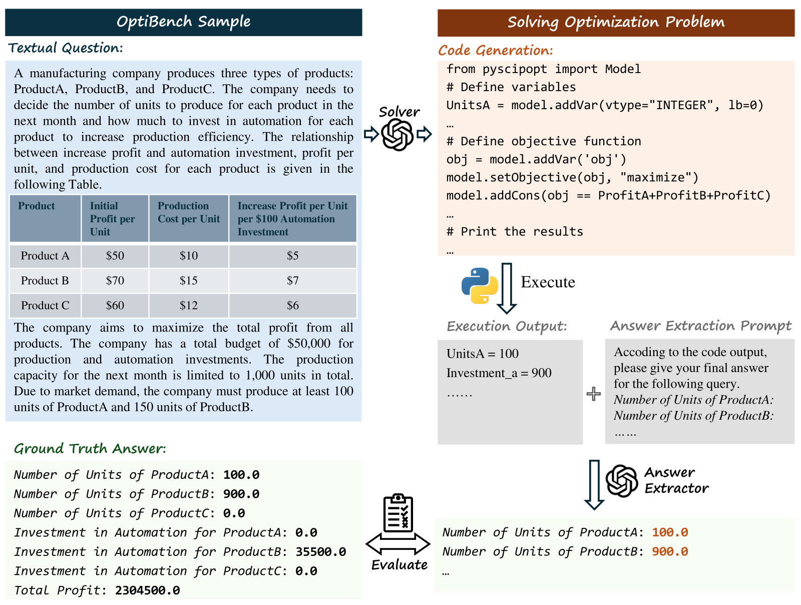

OptiBench Meets ReSocratic: Measure and Improve LLMs for Optimization Modeling
OPTIBENCH tests end-to-end optimization problem solving; ReSocratic synthesizes structured training data from mathematical formulations.

OPTIBENCH evaluates a model by generating and running optimization code, then extracting the numerical decision values and comparing them with the reference answer.
01 / Research question
Can language models solve realistic optimization problems end to end, including nonlinear problems and questions with tables, and can synthetic data improve smaller models?
02 / Approach
OPTIBENCH evaluates both formulation and solving: a model writes executable solver code, runs it, and returns the requested variable values and objective. Its 605 questions cover linear and nonlinear optimization, with and without tabular data. ReSocratic reverses the usual synthesis direction: it starts from mathematical formulations, generates intermediate modeling questions, and turns them into natural-language problems. Rule-based and similarity filters, along with step questions, are used to improve the synthetic training set.
03 / Research scope
The benchmark separates four formats: linear or nonlinear problems, each with or without tables. OPTIBENCH measures whether a model can produce and execute a solver program and correctly extract the numerical solution. In few-shot evaluation, GPT-4o reaches 69.4% overall accuracy; its performance is higher on linear cases than nonlinear cases. After SFT with RESOCRATIC-29K, Llama-3-8B-Instruct improves from 13.6% to 51.1% overall accuracy, while Llama-2-7B-Chat improves from 0.0% to 30.6%.
Experimental results
OPTIBENCH few-shot accuracy
| Method | Linear · no table | Linear · table | Nonlinear · no table | Nonlinear · table | Overall |
|---|---|---|---|---|---|
| GPT-4o | 81.0 | 63.8 | 50.4 | 50.0 | 69.4 |
| GPT-4 | 80.7 | 71.3 | 34.6 | 34.0 | 65.5 |
| Llama-3-70B-Instruct | 79.2 | 57.5 | 33.8 | 32.0 | 62.5 |
| Llama-3-8B-Instruct | 17.8 | 2.5 | 11.3 | 8.0 | 13.6 |
| Llama-2-7B-Chat · SFT on ReSocratic | 40.6 | 11.3 | 15.8 | 32.0 | 30.6 |
| Llama-3-8B-Instruct · SFT on ReSocratic | 63.5 | 32.5 | 33.0 | 44.0 | 51.1 |
The final two rows use RESOCRATIC-29K synthetic training data. SFT is supervised fine-tuning.
Nonlinear and table-based questions remain more challenging. ReSocratic training substantially improves the two smaller open-source models, especially Llama-3-8B-Instruct.
Citation
@inproceedings{optibenchresocratic2025,
title = {OptiBench Meets ReSocratic: Measure and Improve LLMs for Optimization Modeling},
author = {Zhicheng Yang and Yiwei Wang and Yinya Huang and Zhijiang Guo and Wei Shi and Xiongwei Han and Liang Feng and Linqi Song and Xiaodan Liang and Jing Tang},
booktitle = {ICLR},
year = {2025},
url = {https://proceedings.iclr.cc/paper_files/paper/2025/hash/3deb687c44d3687ace0729e5db3b4efd-Abstract-Conference.html}
}